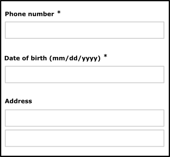
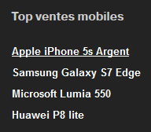

Essential criteria for the development
1. Set a title for each page
Target: everyone and especially people with visual impairments.
When: as of conception and during development.
Description:
Give each page a title that is specific to it and which reflects its content or function (<title> tag).
The page title is the first element read by a screen reader, it must help to formally identify the page where you are.
Checklist:
- Even if there is no rule, in general (opening many tabs in multiple applications), we go from the most specific information to the least specific (e.g. title of the current page - name of the site). When opening a multitude of applications, the approach is different, in this case we will prefer going from the least specific information to the most specific (e.g. name of the site - title of the current page).
- When the content of the page is dynamic (displaying the result of a search, errors in a form, user adding content…), the title of the page should reflect this change.
Users’ goal: Allow users to identify the topic of a page, find and get a clear idea of the content of the page without having to read it. In particular, it is the first element vocalized by a screen reader.
Do:
<title>Home - Corporate web site of Orange</title>
Don’t:
<title>Home</title>
Reference WCAG:
2. Give a title to headings
Target: everyone and especially people with cognitive limitations, reading difficulties and visual disabilities.
When: as of design, during content writing and development.
Description:
One must identify the heading tags (h1 to h6 HTML tags) used to structure the content of the pages.
Visually impaired people browsing with a screen reader can access the list of headings in the page to navigate quickly.
Just like in a Word document, it is possible to use the table of contents only if the heading tags have been properly set within the document.
Checklist:
- The headings must be relevant, reflect the structure of the information contained in the page.
- There must be no break in the heading hierarchy (we cannot jump from a
h2title to ah4title). - You can use several
h1headings per page (Don’t exceed two in most cases). - Hidden tags are dismissed by screen readers (
visibility: hidden;,display: none;oraria-hidden). - The dynamically-generated content must also meet this requirement.
Goal:
- For all users: improve the structure of the page and its contents.
- For search engines: improve SEO.
- For users with visual disabilities, cognitive limitations or reading difficulties: easy navigation and access to content.
Do:
Page with consistent and relevant headings:
(Heading 1) Home – Orange
(Heading 2) News
(Heading 2) Fibre broadband is coming!
(Heading 3) Check eligibility
Don’t: Page with a break in the heading hierarchy h2 → h4:
<h1>Home – Orange</h1>
<h2>News</h2>
<h2>Fiber broadband is coming!</h2>
<h4>Check eligibility</h4>
Tool : Extensions to install in your browser to extract the list of titles:
Reference WCAG:
3. Provide enough contrast between text and background
Target: everyone, especially mobile and tablet users, people with visual impairments, experiencing reading or attention difficulties and elderly people.
When: as of design and during development.
Description: The contrast between the text and its background, even for graphic objects as long as they provide information, should be high enough. Insufficient contrast level will have detrimental impact on users with visual difficulties and for mobile and tablets users in a very bright environment.
Don’t: The label “film | 20h40…” does not have enough contrast. It will not be readable by all users.

Checklist:
- Make sure that the contrast between the color of the background and that of the text and also for text in the form of image carrying information, is:
- 4.5: 1 minimum for a size smaller than 24px CSS and 19px CSS in bold.
- 3: 1 minimum is sufficient for a size greater than 24px CSS and 19px CSS in bold.
- Make sure that GUI components, graphical objects and interface status (focus, hover) have a contrast of 3:1. This includes: buttons, radio buttons, check boxes, selection lists, navigation menus and panels, toolbars, tabs, carousels, sliders, progress bars, tooltips, progress bars, graphics … We do not have to apply this criterion, if:
- if the graphic component can not be represented otherwise: flag, logotype, real photos, screenshots, medical information diagrams using the colors of biology, gradients representing a measurement (heat maps …)
- if a text, like a label, a data table, brings the same information as the icon or the graphic
- if the contrast ratio of the image doesn't prevent the understanding of the content or the function
- Important: for applications used primarily in mobile web or in mobility, the contrast level of the most important elements must be 7:1 in order to ensure a good readability and usability for all.
Users’ goal:
Ease of reading for all users, especially the visually impaired, or people in a very bright environment (outdoors).
Tool: The Colour Contrast Analyser application can quickly measure colour contrast levels (free for Windows and Mac).
Reference WCAG:
4. Do not use colour or sensory characteristics as the unique source of information
Target: everyone, especially the colour-blind and more generally people with visual impairments, cognitive limitations, hearing impairments and elderly people.
When: as of design and during development.
Description: Do not use colour or sensory characteristics (shape, size, sound, direction, visual localization …) as the only way of conveying information, indicating an action, requesting a response or distinguishing an element. The information provided by a colour change or a sensory characteristic must be completed with textual information (alternative) or/and semantic structuring.
Example:
For a pie chart, where each part is coloured differently, you could add different pattern fills to identify them without colour.
Do: 
Don’t: 
This example is not valid because the information is conveyed only by colour.
Checklist:
- Take a screenshot and convert it in black and white. The loss of colour should not cause difficulty while navigating, nor cause loss of information.
- Turn off the speakers, the level of information should remain the same.
- Be sure that links are not only identified by a different colour, usually underline them.
Users’ goal:
Allow users not distinguishing colours or sensory information (colour blind, visually impaired, hearing impaired, mobile users in bright environment or in noisy environments …) to access the same information by other means.
Reference WCAG:
5. Use HTML semantics
Target: everyone, and especially people with visual impairments and cognitive limitations and elderly people.
When: as of design and during content writing.
Description: Use HTML elements as they should, for that they have been made (code validation and compliance with specifications) and respect their semantics to be sure they'll be fully interpreted by assistive technologies.
Checklist: Pages, if required, must contain semantically relevant lists. Add semantics to the HTML content using the following tags:
olfor ordered listsulfor unordered listslifor list itemsdl,dtandddfor definition lists
There must be no empty list and a list must contain at least two elements to be a real list (unless this list is generated dynamically!).
Use <blockquote> for long citations and <q> for short ones.
Links are real links (a <a> tag): they open a new URL, page or tab…
Buttons are real buttons (a button, ou input type=button tag): they trigger an action, a validation or allow a choice…
Respect as much as possible, the classic aspect of these elements to avoid bothering the user, accustomed to a specific aspect for them.
In the HTML code, ensure, when you validate, that, at least:
- Elements must have opening and closing tags
- Elements can be nested according to their specifications
- Elements cannot contain duplicate attributes
- Each ID is unique
Users' goal:
Allows all users to anticipate how to use and possible behaviors for a given interface element.
Technical goal:
Forces the coherent structuring of the content by the creator of the site.
Reference WCAG:
Tool: HTML and CSS Validation Service
6. Decoupling content from interaction and presentation
Target: everyone, especially people with visual disabilities, reading or attention difficulties.
When: during development.
Description:
Strictly decouple the content (HTML), the interaction (Javascript) and presentation (CSS).
Checklist:
- Do not use tables to design the page layout, they should be used only for tabular data.
- Do not use image to display text, except when the visual presentation cannot be achieved using CSS.
- Use CSS classes rather than manipulating inline CSS styles in HTML.
- Do not use CSS pseudo-elements (::before, ::after…) to display information (or provide an alternative for screen readers especially).
- Do not write Javascript events directly inside the HTML, use a separate script or JS file instead.
Users’ goal:
Allow users, via their User Agent or technical assistance (e.g. their browser) to change the visual appearance of the page (zoom, colour, position…). For example, increase the text size without display problems.
Technical goal:
Improves maintainability.
Reference WCAG:
8. Declaring the main language and language changes
Target: everyone, particularly people with visual impairments.
When: during development.
Description:
Specify the primary language of the document with the attribute lang in the html tag.
Also specify the language of a content in a language other than the primary one, using the lang attribute in the HTML element containing the foreign language text.
Checklist:
For words or phrases in foreign language used as generic terms (déjà vu, chef d'œuvre…) or proper names, do not indicate a change of language.
Users’ goal:
This attribute allows you to specify the language to the speech synthesis.
Technical goal:
Enable search engines to identify the language of a page to improve the natural referencing.
Example for a page in French:
- using HTML:
<html lang="fr"> - using XHTML:
<html xmlns="http://www.w3.org/1999/xhtml" xml:lang="fr" lang="fr">
Example of language change:
découvrir Orange <span lang="en">live</span> TV
Reference WCAG:
9. Make form fields accessible
Target: everyone and especially people with visual impairments, cognitive limitations, experiencing attention difficulties and mobile and tablet users.
When: during design and development.
Description:
Each form input must be associated with a label identifying the function of the field, the type of data and the expected format.
This label should be visually close to the field so we can easily mentally link them (especially for people using zoom or software magnifier or even mobile users).
Each label must be set in a label tag, which is associated to the form field with afor attribute, using the id attribute of the form element.
In some cases, it seems unnecessary to associate a label to a form field (e.g. search field with a magnifying glass button next to it). In such case you can provide a hidden label (using accessible hiding), it will not be displayed on the screen but it will be associated with the form field programmatically so screen readers can vocalize it.
The title attribute set on a form element can also be used like a label. You can also use the aria-label and aria-labelledby attributes (see ARIA attributes that can save you), preferably in this order.
The autocompleted attribute must be present and relevant for all fields listed in 7. Input Purposes for User Interface Components.
Checklist:
For any form element, the label should be visually close to the field it identifies.
Align all labels to the left when the number of characters separating the longest label from the shortest label does not exceed 6 characters; beyond that, align all the labels on the right.
If relevant, the fields have an autocompleted attribute so that the user can use a list of pre-recorded or auto-complete proposals.
For radio and check box buttons, in addition to the label tag you can use other tags (title, aria-labelledby, aria-label or, in some cases, fieldset and legend).
For required fields, this should be specified in the label using an image, a text symbol (* for example) or text and / or the aria-required property.
Users’ goal:
Not meeting this requirement is a blocking point for all users using speech synthesis. For mobile users and motor deficient it allows to click on the form elements more easily. For fields with auto-completion, this avoids users input errors.
Do: 
Don’t:

Example of an accessible form:
See the example of an accessible form for more details.
Reference WCAG:
10. Detect, identify errors and suggest corrections
Target: everyone and particularly people with visual impairments, cognitive limitations, reading or attention difficulties and elderly people.
When: as of design and during development.
Description:
The errors are automatically detected, the user is warned by a page title change, the error of the form field is clearly identified and the error is described with words to the user. If necessary, a correction is suggested.
Finally, the wording of the error messages should be explicit.
For web pages that involve important actions (legal commitment, financial transaction, modification or deletion of important data, response to a test or examination…), the action must be reversible or go through a confirmation step to verify or correct the entry in case of error.
Checklist:
Identifying the invalid field, as well as displaying a suggestion of correction can be dynamically added to the label tag, but also to the title tag or aria-label and aria-labelledby tags (see ARIA attributes that can save you) depending on the needs.
Users’ goal:
Guide users when errors happen to improve the understanding and help them correct the errors, especially for internet beginners, elderly people and cognitively deficient.
Do: 
Don’t: 
Example of an accessible form:
See the accessible form example for more details.
Reference WCAG:
11. Set a text alternatives for images and frames
Target: everyone and especially people with visual impairments and cognitive limitations.
When: from design and during development.
Description:
All img tags should have an alt attribute with a relevant description:
- For clickable images: specify the function/ link target in the
altattribute, - For images carrying information: add an
altattribute describing the information contained in the image - For images containing text: add an
altattribute containing at least the text from the image, - For decorative images: add an empty
altattribute, - For images having
altattributes that won’t be convenient when the text is too long (diagrams, graphs…), add a describing text close to the image, or add a link pointing to an HTML page with the description.
Add a title attribute to describe all frame or iframe content or function. If a frame or iframe doesn't convey information for the user (only technical), render it invisible, see example: Hidden accessible frames technics
Checklist:
- Each
imgtag must have analtattribute. - For images not carrying information, set them as background images preferably (CSS).
- For graphics, you can add a link under them to access the data table (revealing it in the same page or in a different page).
Users’ goal:
Access the information included in images for users who cannot access it.
Blocking point: an image without textual Description: is unusable by people with visual impairments or those that cannot display images (mobile, low bandwidth…).
Technical goal:
Improve the natural referencing.
Valid example:<a href="./home"><img src="logo_orange.jpg" alt="back to home"></a><img src="banner_bouquet_famille.png" alt="Good deal, family max plan 2 euros per month for 12 months instead of 16 euros.">
Example with an empty alternative:
In the example below, the right pictogram doesn’t have to be vocalized as the text on the left already provides the information.
In this case setting the alt attribute to something other than empty would provide redundant information.

<h3>guaranteed 24h service</h3><img src="service-24.png" alt="">
Tools: The Web developer extension (ability to display text alternatives for all images).
Reference WCAG:
12. Provide accessible audio or video tracks
Target: everyone and particularly people with visual disabilities, hearing impairments, cognitive limitations, or difficulties with English.
When: during design and development.
Description:
To be accessible, the multimedia contents must:
- propose a full transcript
- offer subtitles (video only)
- offer audio description (video only)
- choose an accessible media player
- Prohibit the automatic start of the video when loading the page
- Prohibit videos that have more than 3 flashes per second
- Furthermore, for any sound that has been emitted for more than 3 seconds, the user must have the option of either stopping or pausing it or controlling its volume regardless of the overall system volume.
For more info check out accessibility recommendations for video content, animations and Orange audios.
Users’ goal:
Provide access to visual and hearing information for people who cannot access it: visually impaired, blind, deaf, cognitively deficient, computer without speakers, noisy or bright environment.
Technical goal:
Allow audio and video referencing.
Reference WCAG:
- 1.2.1 Audio-only and Video-only (Prerecorded)
- 1.2.2 Captions (Prerecorded)
- 1.2.3 Audio Description or Media Alternative (Prerecorded)
- 1.2.4 Captions (Live)
- 1.2.5 Audio Description (Prerecorded)
- 1.4.2 Audio Control
- 2.2.2 Pause, Stop, Hide
- 2.3.1 Three Flashes or Below Threshold
13. Structuring data tables
Target: everyone, particularly people with visual disabilities.
When: as of design and during development.
Description:
For tabular data:
- Use the
tableelement withth(for table headers),td,trchildren elements. - Use the
scopeattribute withrow/colvalues to associate header cells and data cells. For complex tables, use theidandheadersattributes. - Use the
captiontag, ah1toh6tag just before the table or use a text near the table via anaria-labelledbyattribute in thetableelement to associate a title to the table (see ARIA attributes that can save you). - Add a summary to explain the structure of a complex table :
- HTML5: add the summary directly in the
caption. - Previous version: add the summary in a
summaryattribute.
- HTML5: add the summary directly in the
Checklist:
- Reminder: Do not use tables for page layout purposes.
- The caption (
caption) can be replaced by a section title (hx) located before the table. - Prefer splitting a complex table into several simpler tables.
- The
tbody,tfootandtheadtags have no influence on accessibility, hence, there is no obligation to use them.
In the case of a complex table, a summary is present to explain the structure:
- HTML5: the summary of the table is present in the legend (
caption). - HTML5 - alternative solution: the summary is linked to the array via an
aria-describedbyattribute. - Previous version: the summary is present in a
summaryattribute of the table.
Users’ goal:
Giving a summary and title for data tables allows everyone to know quickly its purpose without having to read it. For visually impaired users, binding cells to headers allows them to know where they are situated and understand the data in it.
Technical goal:
Improve natural referencing.
Reference WCAG:
14. Use relative size to allow changing text size and responsive design
Target: everyone and especially people with visual impairments, using a device outdoors and elderly people.
When: during development.
Description:
Use relative length units for font size (em, rem, %) and for containers handling text size enlargement up to 200% and design your pages to be responsive.
Checklist:
- Do not use pixel (
px) for size that must adapt if we increase the text size (impossible with Internet Explorer). - Form fields must also have relative sizes to enlarge properly.
- Try to make the container adaptive so they can increase in size when the text is zoomed in.
- In Firefox, go to View>Zoom and activate Zoom text only, set the zoom to 200%. Verify that there is no loss of information (disappearance or overlapping text).
- Content must respond to screen size changes, adjusting its contents without horizontal scroll even when screen width is reduced to 320 CSS pixels, unless special needs (map, table, diagram… ).

Users’ goal:
Allow users (visually impaired, using a device outdoors, elderly people…) to increase the font size and enlargement of the page so they can access easily the information.
Example: See the example handling zoom, increasing the text size for more details.
Reference WCAG:
15. Allow text spacing
Target: everyone, particularly people with visual disabilities.
When: as of design and during development.
If the user applies the following settings, the text must remain legible (no truncated content, superimposed):
- The line height must be adjustable to at least 1.5 times the font size.
- The space between two paragraphs must be adjustable to at least 2 times the font size.
- The letter spacing must be adjustable to 0.12 times the font size.
- The word spacing between words must be adjustable to at least 0.16 times the font size.
This can be done by applying the following CSS rules :
* {
line-height: 1.5!important;
letter-spacing:.12em!important;
word-spacing: .16em !important;
}
p {
margin-bottom: 2em!important;
}
Bookmarklet:
To ease the test, use the following bookmarklet (to keep in your bookmarks) : Text spacing
Users’ goal: Improve reading comfort for people with cognitive and visual disabilities.
Reference WCAG:
16. Text of links and buttons must be accessible
Target: everyone, especially people with visual impairments, cognitive limitations (dyslexic) or attention difficulties.
When: as of design and during development.
Description:
Both of these requirements must be met before a link or button can be accessible:
First, make text of links and buttons understandable out of context, especially for the visually impaired. When navigating with a screen reader, it is possible to access the list of links on the page to navigate quickly. If your page contains more than one "more info" links, it will be impossible to tell them apart from each other. If it is not possible to make a link or a button more explicit by the heading, for lack of space, but the current text is sufficient in its context, one must use a
titleattribute to display a tooltip, with all the necessary information, on mouse over, but also to complete the text with additional content, at choice, use:- a piece of text hidden by accessible masking via CSS
- an attribute
aria-labeloraria-labelledbycontaining all the contents oftitle(see ARIA attributes that can save you) .
In addition, the text of the label displayed (the text or the text of the image, visible on the screen) for any interface component (link, button …) must be present (first, if possible) in the (accessible) name of the component (to go further, The accessible name in HTML.
For example, in the image below, the two “next” links are not explicit enough for a person with visual impairments. However, when one sees the screen, the positioning makes obvious the function of each button.

In this case, add an accessible hidden content using span to complete the link label. This will not be displayed on the screen, but will be vocalized by assistive technologies.
Example:
<a href="…" title="Validate the payment by installments">Validate<span class="accessible-hidden-content"> to pay by installments</span></a>
<a href="…" title="Validate the payment in one go">Validate<span class="accessible-hidden-content"> to pay in one go</span></a>
Another solution is to use an aria-label or aria-labelledby attribute to clarify the link label (see ARIA attributes that can save you).
<a title="confirm to pay in installments" aria-label="confirm to pay in installments" href="…">confirm</a>
<a title="confirm to pay in one go" aria-label="confirm to pay in one go" href="…">confirm</a>
Checklist: Make sure that the semantics HTML are respected:
- a link must allow to change URL, to page, to download a file, to make appear / disappear content, to go to an anchor.
- a button must allow to submit / reset a form, to open a modal window, to make appear a sub-menu, to control a media, to trigger an action via JS.
Ensure that links, out of context, give good information about the triggered action or destination.
A page must not contain multiple links with the same label but pointing to different destinations/ actions.
Users’ goal:
Allow users who don’t have access to the visual context to know the destination of the link.
Particularly important for users navigating through a list of links extracted from the page (screen readers) or software magnifying glass users who see only a fraction of the page.
Technical goal:
Making explicit link labels improves natural referencing.
Do:
Associate a link labelled “click here” with a hidden label: “order you mobile phone”.
Don’t:
“Click here” or “Read more…” links without clarification.
Reference WCAG:
17. Warn the user when opening a new window
Target: everyone, especially people with visual impairments, cognitive limitations or having attention difficulties.
When: as of design and during development.
Description:
Notify the user of any new window opening by mentioning it in the text of the link.
If it is not possible, use the title attribute with the whole information needed (e.g. "buy the Nokia 7510 (new window)") and add, at choice:
- the use of an icon (image with an
altindicating the opening of a new window or just "(new window)"). - a hidden piece of text in accessible display via CSS.
- an attribute
aria-labeloraria-labelledbycontaining all the contents oftitle(see ARIA attributes that can save you).
Example:
Example of an icon that indicates the opening of a new window.
Checklist:
For any link opening a new window or a new tab, a mention like “(new window)” is shown in the link label, or a “(new window)” mention is positioned off screen via CSS (accessible hidden content).
Users’ goal:
Avoid the unexpected opening of a window, because this can disturb, disrupt, or confuse the user. In particular for persons using mobile browsers, using speech synthesis or cognitively impaired.
Do:
For any external link and opening a new window, the label could be: “Go to the orange.com site (new window)”, for a picture-link the alt attribute could be: “consult the EULA (new window)”.
Reference WCAG:
18. Allow the use of the main features of the application with the keyboard
Target: everyone, especially people with motor or visual impairment and using a device outdoors.
When: as of design and during development.
Description:
Implement event handlers that don’t rely on mouse events only, therefore allow to be controlled by the keyboard and this without time limit.
Checklist:
- All the important actions performed with the mouse can also be done with the keyboard, even if you have to provide a specific alternative for the complex interactions (drag'n'drop, gestures with several fingers on mobile …) while avoiding countless strikes.
- Make maximum use of the basic HTML interactive components (fields, links, buttons), these being natively accessible to the keyboard. Otherwise, ensure that the custom components are keyboard operable in a conventional manner.
- All important actions performed with a mouse must also be reproduced with the keyboard, even complex interactions (drag & drop, mobile touch gestures…).
See how to navigate with a keyboard in a web browser.
Users’ goal:
Allow users who cannot use the mouse (blind, motor disabled, mobile web, outdoor…) to access the main features of the application with the keyboard.
Do:
- A sub-menu displayed when the mouse is over an element must also be displayed when the parent menu item receives the keyboard focus.
- In a webmail, right-clicking on the “trash” icon opens a menu to empty the trash, this option should be also available from an “empty the trash” button elsewhere in the interface or from a drop-down menu accessible with the keyboard.
Don’t:
A functionality only available through drag & drop and without any keyboard equivalent.
Reference WCAG:
19. The focus order must be sequential and logical without keyboard trap
Target: everyone, especially people with motor or visual impairments and using a device outdoors.
When: during development.
Description:
Elements (links, buttons, form fields) must receive the focus in a logical order for the user, without being trapped or blocked, even for dynamically-generated content appearing or disappearing (changing the DOM, Ajax,…).
Example (numbered bullets indicate how focus moves in the page) :
Checklist:
- To validate this requirement, the focus position must be visible at all times (
outlineand:focusCSS properties), see requirement 20 below. - Be careful, the order of appearance of the elements in the HTML code is the same as the order in which the focus is moved though the page. An element at the end of the source code but positioned at the top of the page via CSS will be the last to receive the focus.
- For maintainability, avoid using the
tabindexattribute with values higher than 0. - Even when there is appearance or disappearance of content, it is necessary to keep this logical and sequential path. This is true for dynamically generated content or for SPA (single page application). For more details, see Manage Focus for Dynamic Content
Users’ goal:
Allowing logical navigation without “trapping” the keyboard in the pages of the application. Necessary for users navigating with the keyboard (visually impaired, motor impaired, cognitive impaired, using a device outdoors).
Don’t:
A page containing a video player where the focus can enter inside the player, but cannot get out (keyboard trap).
Reference WCAG:
20. Make the focus visible at all times
Target: everyone and especially people with visual impairments, cognitive limitations, motor disabled, having attention difficulties or using a device outdoors.
When: as of design and during development.
Description:
Do not hide the focus and if necessary make it visible enough (e.g. by modifying the outline CSS property) on all elements likely to receive it (links, buttons, form elements). You can also enhance the visibility of the focus so that it is easily identifiable.
Make sure to provide a 3:1 level of contrast so that it is visible enough (see measure the level of contrast of colors).
When an effect is visible on an element during mouse-over (e.g. :hover CSS property), this effect must also be displayed when capturing the focus (:focus).
It is possible, with Javascript code, to display the outline only during a keyboard navigation (ie not to display the outline when clicking a mouse, which also activates the : focus state:
var head = document.head || document.getElementsByTagName(’head’)[0];
var axsStyles = head.appendChild(document.createElement(’style’));
document.addEventListener(’mousedown’, function() {
axsStyles.innerHTML = ’* {outline:none !important}’;
});
document.addEventListener(’keydown’, function() {
axsStyles.innerHTML = ’’;
});
Demonstration of visibility of focus on keyboard navigation only
Checklist:
In many frameworks front or in reset CSS , the outline property (which allows you to view the focus) is disabled (outline: none;), remember to redefine it and check that the focus is visible on all elements that receive it.
By default, the focus is visible via the CSS outline: 1px property. This is not enough to be visible, we recommend at least 2px for theoutline property and a contrast of 3:1 compared to the background color.
In addition, it is necessary to check the visibility of the focus on all the focusable elements, in particular, because the background color of the element can be the same as the focus and thus, hide it.
Users’ goal:
Allow focus visibility on all elements, especially for keyboard users (visually impaired, motor disabled or those with attention or memory difficulties and using devices outdoors).
Do: Focus set on the «Apple iPhone 5s argent» link, clearly visible.

Don’t: Focus set on the «Apple iPhone 5s argent».

Reference WCAG:
21. Provide skip links
Target: useful for mobile and tablet users, people with visual impairments, motor disabilities or using a device outdoors.
When: as of design and during development.
Description:
Provide skip links allowing to access directly the main page areas (navigation, content, bottom of the page, search…) with internal links pointing to anchors. (<a> tags or any HTML element with an id attribute). In very specific cases, the links can be hidden on the screen and appear only when keyboard navigation is detected.
Checklist: When a skip link is activated, make sure the focus is correctly set (not only scrolled to the right position).
Users’ goal:
Facilitate the navigation for users using a keyboard, visually impaired, users of magnifying glass software or mobile phone.
Example: Skip links (“Skip to navigation”, “Skip to content”) are available on this site. To make them appear, move the focus on the top of the page by clicking on your browser’s address bar, for example, then repeatedly press the TAB key.

Reference WCAG:
22. Allowing animations control
Target: people with visual impairments, reading, attention or understanding difficulties, people with seizure disorders.
When: when designing the service and graphic design.
Description:
All moving, refreshed, flashing or scrolling content (eg a carousel) must be able to be stopped, hidden or paused by the user if this animation lasts more than 5 seconds.
Also, avoid as much as possible flashing content and sudden brightness changes (see The logo of the Olympics causes seizures).
Therefore, it is necessary to pause the animation when loading the page or to give a way to stop or pause the animation, the update or the flashing via a button for example.
Example: 
A carousel that automatically scrolls must be paused when the mouse is over it or when it receives the focus.
It is also possible to add a “pause” button directly in the interface.
Reference WCAG:
23. Make sure the main features can be used with screen readers
Target: everyone, especially people with visual impairments.
When: during development.
Description:
Follow general recommendations for accessibility, use primarily the HTML standard components, otherwise, use the ARIA (Accessible Rich Internet Applications) interface for complex components.
Checklist:
Ensure there is no blocking point with a browser/screen reader combination (Firefox/NVDA, IE/Jaws, Safari/VoiceOver) when a user navigates (accessing the main features of the application). Indeed, screen reader users are the most affected by the lack of accessibility, we can identify a huge amount of problems in satisfying this requirement.
Users’ goal:
Allow the screen reader users to access the main features of the application, but also ensure the usability of the application for all users.
Reference WCAG:
25. Ensure the user keeps control during interactions
Target: Everyone, especially those who are visually impaired, cognitive or with attention deficit.
When: early in the design phase and during development.
Description:
- Do not induce a change of context when setting the focus on an element, entering data or activating a form element without this change being predictable (button) or the user has been warned.
- Do not impose on the user a time limit to perform an action. This must be able to extend a time limit if appropriate.
- If keyboard shortcuts based on a single key is available, it is necessary to take some measures to avoid possible conflicts with assistive technology.
- The user must have control on the contents opening on hover or focus.
Checklist:
Regarding shortcuts, make sure that at least one of the following statements is true:
- turn off: the shortcut can be turned off.
- modification: a mechanism is available to remap the shortcut to use one or more successive non-printable keyboard characters (e.g. Ctrl, Alt, etc).
- focus activation: the keyboard shortcut for a user interface component is only active when that component has focus.
If content appears on mouse over or focus (eg tooltip), the user must be able to:
- Hide this new content without the need to move the pointer or focus; eg with the esc. key (useful especially for screen magnifier users).
- Move the mouse pointer on this new content without it disappearing.
If actions are to be performed in a timed manner, verify that the user can extend or remove this restriction.
User Objective: give all users control of the context changes related to their action and give them the necessary time to perform an action.
Example: a form must have a send button. It should not be sent automatically after the user input.
Reference WCAG:
- 1.4.13 Content on Hover or Focus
- 2.2.1 Timing Adjustable
- 3.2.1 On Focus
- 3.2.2 On Input
- 2.1.4 Character key shortcuts
26. Avoid captcha
Target: Everyone in particular, visually impaired people.
When: during design and development.
Description: Captchas are often the source of difficulties for users. If the implementation of an anti-spam system can not be avoided, it is advisable to move towards a more flexible solution for the user:
- Double authentication
- Hidden form field to leave blank (honeypot technic), not visible to the user
- Providing phone support to ensure that the customer is a real person
- A check to ensure that the same IP/User agent combination does not attempt to submit the form more than X times per second.
If no other alternative is possible, it is essential to provide an alternative for captcha only visual or sound by proposing a combination of captcha types: an audio + visual captcha, logical tests (question whose answer is obvious, mathematical test simple …) + classic visual captcha…
More details on Captchas.
Reference WCAG:
27. Identify and maintain consistency of groupings and different regions of the page
Target: Everyone, especially people with visual, cognitive or attention deficit disorders.
Description: Provide ways to identify and visually distinguish the different parts of the page and ensure the consistency of these regions or groupings in all pages.
Checklist:
- Ensure that links in the body of the text are easily identifiable visually by means other than color (underlined, bold ...) compared to the rest of the text.
- Make sure that the navigation mechanisms are always located at the same place in a set of pages.
- Ensure that the components and groupings that have the same function are identified (visually and semantically) in the same way.
- Ensure that the areas of the page are clearly delimited (borders, edges, sufficient contrast …) or that there is a way to visually distinguish the groups (sub-menu, drop-down list …) as well as the different regions of the page.
User Objective:
Allow users to identify and locate interface elements in all pages.
Do: 
Here, the tooltip (tooltip) is delimited by a visible edge and sufficiently contrasted, to identify its content.
Don't: 
It is very difficult to associate the themes ("par region", "par genre", …) and the sub-themes in columns, especially since the horizontal borders are too little contrasted.
Example: The HTML5 and landmarks ARIA
To give a semantic structure to the main regions of a page, we can use the HTML5 </ abbr> structure tags (main for the main content of the page,nav for the main navigation, headerfor page header,footer for footer, aside for content complementary to the main content, and others) even if their support by assistive technologies / browsers is not complete, it's enough. You can also use, to set up this page structure, the landmarks ARIA (Accessible Rich Internet Applications) and there, the support is much better!
All about the landmarks ARIA in our examples.
Setting up this type of semantics allows visually impaired people to identify and understand the organization, the overall structure of the page and thus navigate more easily.
Reference WCAG:
28. Provide multiple access and location
Target: Everyone, especially people who are visually or cognitively impaired.
Description:
Give the user several ways to locate and access specific content, locate the web page being viewed in a set of pages. When the page is a step in a process where the pages follow one after the other, providing a way to locate can be ignored.
Checklist:
Make sure that several systems allow you to locate and access a page or content in the site: a search tool on the entire site, a site map, a global navigation menu, a breadcrumb trail…
User Objective:
Allow all users to find their way in order to access more easily all the content of the site.
Do:
The site offers, at the same time, a complete and precise main navigation and a breadcrumb trail.
Don't:
An application provides a parcel navigation menu and no other way for the user to navigate the pages or locate where the current page is in the tree.
Reference WCAG:
29. Define sensitive areas of sufficient size
Target: Everyone, especially people with motor or visual disabilities and mobility.
When: during design and development.
Description:
Each sensitive area must have a sufficient size (minimum 9mm width and height).
In addition, the sensitive areas must be sufficiently spaced from each other (about 2mm minimum).
30. Allow zooming
Target: everyone especially the visually impaired.
When: during development.
Description:
The site must not prohibit or limit the use of the zoom (especially on mobiles).
31. Allow to cancel the triggering of gestural interactions
Target: Everyone, especially people with motor or visual disabilities and mobility.
When: during development.
Description:
During a single-point gesture interaction, at least one condition is true:
- the down event of the pointer (MouseDown) is not used to perform part of the function
- Abort or cancel, the function is terminated on the up event (MouseUp) and a mechanism is available to abort the function before the end or to cancel the function when finished
- Ability on the up event to reverse any result of the previous down event
- Finish the function on the event is essential. Note: Functions that emulate a keyboard or numeric keypad are considered as essential.
Reference WCAG:
32. Offer an alternative to complex gestures
Target: Everyone, especially people with motor or visual disabilities and mobility.
When: during design and development.
Description:
- For each complex gesture interaction or path-based interaction ( swipe, drag, pinch </ span> ...), an alternative must be available (for example a non-gestural or simplified alternative) unless this gesture or this trajectory is essential (eg signature).
- In the same way, for the interactions requiring a change of orientation of the apparatus or a movement of the user (tilting, rotation, shaking ...), this functionality can be deactivated and must have an alternative in the interface.
Complex gesture: any multi-pointer gesture (requiring several fingers), and / or path-bases gesture.
Simplified gesture: an alternative requiring a single pointer (one finger) without path-based gesture.
Reference WCAG:
33. Give access to the content regardless of the orientation of the screen
Target: Everyone, especially people with motor or visual disabilities and mobility.
When: during design and development.
Description:
Access to the content must not depend on the orientation of the screen (portrait and landscape) unless a specific display orientation is essential (e.g. serious game).
Reference WCAG:
34. Allow to know the result of a user interaction with status messages
Target: Everyone, especially people with visual, cognitive and attention deficit disorders
When: during conception to content writing and development.
Description:
Provide the assistive technology user (AT) with status messages that give him feedback on the action he has just completed without receiving focus.
Checklist:
Important information for the user but without change of context (no opening of a new window, no focus, no modification of the content or viewport) must be perceived via properties and roles (ARIA) by anyone using AT without the focus on the message.
A status or pop-up message can be:
- a message that gives the user information on the result or the success of an action (ex: Your request has been taken into account)
- a waiting message that indicates that the triggered action is running and indicates an approximate wait time
- an error message following a user interaction
- a message that gives information without a change of context
In HTML, the specific ARIA roles of type alert,status, dialog,progressbar, and so on. are ways to make these status messages accessible (to go further Use ARIA for status, status, or context messages.
User Objective:
For all users, have feedback on the essential actions it performs.
Reference WCAG: